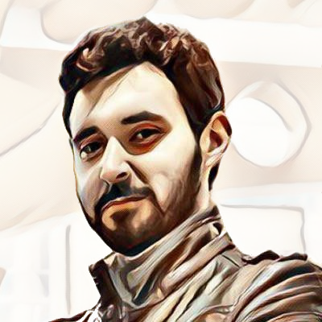
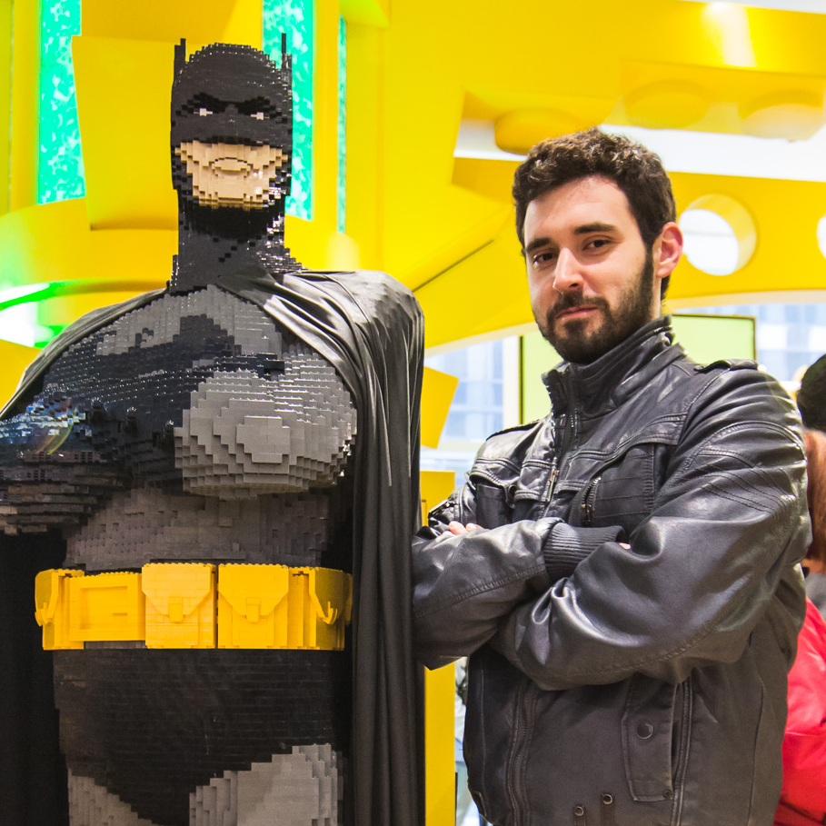

Blog
Tags
Cheatsheets
Projects
To-do
CV
PhD
Write my first workshop paper as main author
Write my first journal paper
Write my first book chapter
Chair a W3C Community Group
Collaborate in a W3C recommendation
Become a doctor!
Technical
Write a NodeJS App. Maia [See
ISSUES
]
Write my first Django Application
Develop a distributed LibP2P golang application
Github repo with +100 stars
Languages
English
Chinese
Greek
German
Esperanto
Personal
Run a 10k
Blog regularly for a year


Linux user
Android dev and user
Github user
GitLab user
StackExchange fan
Music lover
Movie fan
Always on a PC
Night owl
CLI user
I love languages
I love programming
Latest entries
Controlling Zigbee devices with MQTT
mqtt
iot
zigbee
Progress bars in python
python
Sharing dotfiles
github
git
dotfiles
Zotero
zotero
webdav
nginx
apache